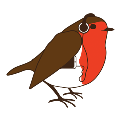

{% load static %}
<!doctype html>
<html lang="en">
  <head>
    <title>{% block title %}{% endblock title %}</title>
    <!-- Required meta tags -->
    <meta charset="utf-8">
    <meta name="viewport" content="width=device-width, initial-scale=1, shrink-to-fit=no">

    <!-- Bootstrap CSS -->
    <link rel="stylesheet" href="https://stackpath.bootstrapcdn.com/bootstrap/4.3.1/css/bootstrap.min.css" integrity="sha384-ggOyR0iXCbMQv3Xipma34MD+dH/1fQ784/j6cY/iJTQUOhcWr7x9JvoRxT2MZw1T" crossorigin="anonymous">
    
    <!-- Custom CSS -->
    {% comment %} <link rel="stylesheet" href="{% static 'css/bootstrap.css' %}"> {% endcomment %}
  </head>
  <body>

    {% comment %} Navbar {% endcomment %}
    <nav class="navbar sticky-top navbar-expand-md navbar-dark" style="background-color: #D00000">
        <div class="container">
            <a class="navbar-brand" href="{% url 'dashboard' %}">
                
                One Stream in Bristol</a>
            {% if request.user.is_authenticated %}
            <button class="navbar-toggler" type="button" data-toggle="collapse" data-target="#navbarSupportedContent"
                aria-controls="navbarSupportedContent" aria-expanded="false" aria-label="Toggle navigation">
                <span class="navbar-toggler-icon"></span>
            </button>
                <div class="collapse navbar-collapse" id="navbarSupportedContent">
                    <ul class="navbar-nav mr-auto">
                        <li class="nav-item {% if section == "dashboard" %}active{% endif %}">
                            <a class="nav-link" href="{% url 'dashboard' %}">Dashboard</a>
                        </li>
                        <li class="nav-item {% if section == "blog" %}active{% endif %}">
                            <a class="nav-link" href="#">Blog</a>
                        </li>
                        <li class="nav-item {% if section == "podcast" %}active{% endif %}">
                            <a class="nav-link" href="#">Podcast</a>
                        </li>
                        <li class="nav-item {% if section == "shop" %}active{% endif %}">
                            <a class="nav-link" href="#">Shop</a>
                        </li>
                    </ul>
            {% endif %}
            {% if request.user.is_authenticated %}
                <form class="form-inline">
                    <span class="navbar-text mr-3">Hello {{ request.user.first_name }}</span>
                    <a class="btn btn-light" href="{% url 'logout' %}" role="button">Log-out</a>
                </form>
            {% else %}
                <form class="form-inline">
                    <a class="btn btn-light" href="{% url 'login' %}" role="button">Log-in</a>
                </form>
            {% endif %}
        </div>
    </nav>

    {% comment %} {% if messages %}
        <ul class="messages">
            {% for message in messages %}
                <li class="alert {{ message.tags }}">
                    {{ message|safe }}
                    <a href="#" class="close">x</a>
                </li>
            {% endfor %}
        </ul>
    {% endif %} {% endcomment %}

    {% if messages %}
        {% for message in messages %}
            <div class="container-fluid p-0">
                <div class="alert {{ message.tags }} alert-dismissible" role="alert" >
                    <button type="button" class="close" data-dismiss="alert" aria-label="Close">
                    <span aria-hidden="true">&times;</span>
                    </button>
                    {{ message }}
                </div>
            </div>
        {% endfor %}
    {% endif %}

    <div class="container mt-3" id="content">
        {% block content %}
        {% endblock content %}
    </div>
      
    <!-- Optional JavaScript -->
    <!-- jQuery first, then Popper.js, then Bootstrap JS -->
    <script src="https://code.jquery.com/jquery-3.3.1.slim.min.js" integrity="sha384-q8i/X+965DzO0rT7abK41JStQIAqVgRVzpbzo5smXKp4YfRvH+8abtTE1Pi6jizo" crossorigin="anonymous"></script>
    <script src="https://cdnjs.cloudflare.com/ajax/libs/popper.js/1.14.7/umd/popper.min.js" integrity="sha384-UO2eT0CpHqdSJQ6hJty5KVphtPhzWj9WO1clHTMGa3JDZwrnQq4sF86dIHNDz0W1" crossorigin="anonymous"></script>
    <script src="https://stackpath.bootstrapcdn.com/bootstrap/4.3.1/js/bootstrap.min.js" integrity="sha384-JjSmVgyd0p3pXB1rRibZUAYoIIy6OrQ6VrjIEaFf/nJGzIxFDsf4x0xIM+B07jRM" crossorigin="anonymous"></script>
  </body>
</html>